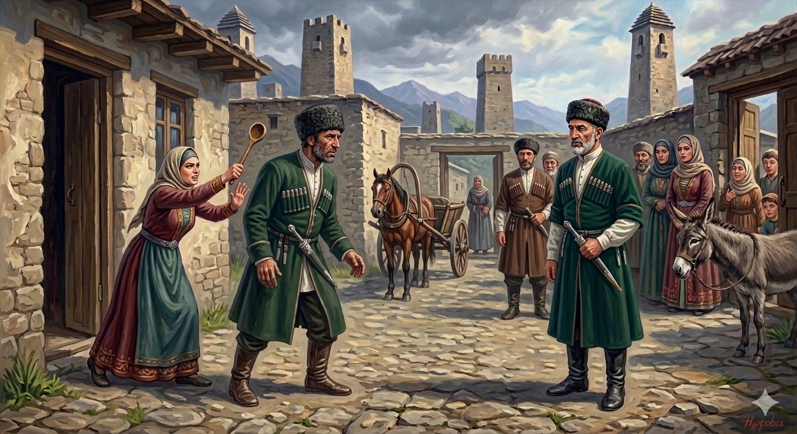

И.А. Дахкильгов. Хьехаме дувцарш - поучительные рассказы-притчи.
И.А. Дахкильгов. Хьехаме дувцарш - поучительные рассказы-притчи. Из ингушского фольклора.

Къонах истех леташ хилац
Шамала наӀибаш болча ваха везаш хиннав, йоах, Уцига Малсаг. Майреи денал долаши вола уллув вала саг ийшав цунна. ДӀахаьттача, наха хьийхад: - ЦӀихеза эбарг ва хьона Ӏумарий Ӏаьла. Изамо довна денал долаш вола саг хьо хье воацар кхы ва а вац. Хоато-ош, цун цӀенга дӀаэттав Уцига Малсаг. БӀаргавейнав цунна цӀагӀара араэккхаш цхьа тенна къонах. Цун букъах кодилг а бетташ, тӀехьа едда йоагӀаш кхалсаг хиннай. Къонах коара араийккхав. Уцига Малсага тӀанийсавеннав. ДӀай-хьай къамаьл дича, хайнад Уцига Малсага из къонах Ӏумарий Ӏаьла волгеи цун букъах лийтар цун сесаг йолгеи. "Ера-м цхьа доастама кхалпат хиннав", - дагахьа а аьнна, ше дена гӀулакх дӀа а ца хойташ, Ӏадика и йийца, цигара ваьнна дӀавахар Уцига Малсаг. НаӀибаш болча вахача тийшача балхаца Уцига Малсаг вийр. Цул тӀехьагӀа, хала а хеташ, Ӏумарий Ӏаьлас кастлуш оалаш хиннадар: - Аь-аь, Уцига Малсаг, Ӏа хьайца со вигаваларе, цу наӀибех леташ хьол хьалха лерг ма варий со! Кхалсага майра вар къонах воацалга хьога ала кхензар со!
РУССКИЙ
Настоящий мужчина с женами не дерется
Известному мужчине Уциге Малсагу необходимо было поехать к шамилевским наибам. В этом опасном пути ему нужен был мужественный и храбрый попутчик. Начал он людей расспрашивать, и ему посоветовали: "Есть известный абрек Умарий Эла. В бранных делах он может уступить только тебе". С помощью односельчан абрека Уцига Малсаг дошел до его дома. И тут он увидел, как из дому выскочил мужчина крупного сложения, а за ним гналась женщина и колотила поварешкой по его спине. За воротами мужчина столкнулся с Уцигой Малсагом. Разговорились, и Уцига Малсаг узнал, что этот мужчина как раз и есть тот самый Умарий Эла. Подумал про себя Уцига Малсаг: "Это какой-то женоподобный ничтожный человек, которого поварешкой гоняет жена". Уцига Малсаг не сказал ему о цели своего приезда, попрощался и поехал далее, заехал к наибам Шамиля, и те подло убили его. Говорят, после этого Умарий Эла часто горестно восклицал: "Эх, Уцига Малсаг! Если бы ты взял меня с собою, то ты погиб бы только после меня! Не успел я тебе сказать, что настоящий мужчина не тот, который храбрится перед женщинами".
ENGLISH
A real man doesn't fight women
The renowned Utsiga Malsag had to travel to meet the Shamilian naibs. For this perilous journey, he needed a courageous and valiant travelling companion. He asked around and was advised: "There is a famous abrek named Umariy Ela. When it comes to fighting, he is second only to you." With the help of his fellow villagers, Utsiga Malsag made his way to the abrek's house. There, he saw a large man run out of the house, pursued by a woman who was hitting his back with a wooden spoon. As he reached the gate, the man collided with Utsiga Malsag. They struck up a conversation and Utsiga Malsag realised that this man was Umariy Ela himself. Utsiga Malsag thought to himself, 'He's an effeminate, insignificant man, being chased around by his wife with a wooden spoon.' He did not tell Umariy Ela the purpose of his visit, merely saying his goodbyes before riding on. He stopped by Shamil's naibs, who treacherously killed him. After this, it is said that Umariy Ela would often exclaim sorrowfully: "Ah, Utsiga Malsag! If only you had taken me with you, you would have died after me! I did not have time to tell you that a real man is not one who brags in front of women."
НОХЧИЙН
Къонах зудчух леташ хилац
Шамалан наӀибаш болче ваха везаш хилла, бох, Уцига Малсаг. Майра а доьналла долуш а волу улле вала стаг эшна цунна. ДӀахаьттича, наха хьехна: - ЦӀейахна обарг ву хьуна Ӏумарий Ӏаьла. И санна девна доьналла долуш волу стаг хьо хьой воцург кхин ван а вац. Хотту-уш, цуьнан цӀенга дӀахӀоьттина Уцига Малсаг. БӀаьргавайна цунна цӀера араоьккхуш цхьа тайна къонах. Цун букъах чами а бетташ, тӀаьхьа йедда йогӀуш зуда хилла. Къонах корах араиккхина. Уцига Малсаган тӀенисвелла. ДӀай-схьай къамел дича, хиъна Уцига Малсаган иза къонах Ӏумарий Ӏаьла волий цуьнан букъах летарг цуьнан зуда йоллий. "ХӀара-м цхьа дастаме зуда хилла", - дагахь а аьлла, ша деан гӀуллакх дӀа а ца хоуьйтуш, Ӏодика а йийцина, цигара ваьлла дӀавахар Уцига Малсаг. НаӀибаш болчу вахча тешнабехкаца Уцига Малсаг вийра. Цул тӀаьхьа, хала а хеташ, Ӏумарий Ӏаьлас кест-кеста олуш хилла дар: - Аь-аь, Уцига Малсаг, ахь хьайца со вигин велхьара, цу наӀибех леташ хьол хьалха лийра ма варий со! Зудчуьнца майра верг къонах вецийла хьоьга ала ца кхиира со!
ПОГОВОРКИ
Аькхано баькха сардам чарахьах бода. - Проклятие подстреленного зверя настигает охотника.БӀаргашта хоза хетарах пайда бац, дего тӀаэцаш ца хилча. - Пустое, что нравится глазу; дело, что принято сердцем.Даь дика мекъа вир санна дода, даь во – масса ды санна хехка дода. - Добро идет, словно ленивый ишак, зло несется скакуном.Цаховчох хатта дукха хиннад. - Непонятное вызывает много вопросов.Денача хана – нускал, эттача хана – Ӏу. - На свадьбе – невеста, после свадьбы – прислуга.Виран бакъалг хоза хул, кхийча, ше мадарра вир хул. - Ишачонок бывает красивым, но вырастет – ишак ишаком.Юрта – гали, Буро тӀа – лаьжг. - Что на селе – мешок, то в Буро (Владикавказе) – всего лишь кожаная торба.Лаьттах дӀадийначох пайда боал, декхара денначох дехке воал. - Кинул в землю зерно – получил пользу, дал деньги в долг – пожалел.Ха яр пайда бац, цунна доал де хьона ца хой. - Нет пользы от удачи, если ты не сумеешь ею воспользоваться.Ший цӀагӀа яа сискал йоцашвар наьхацига дулха дикал-вол къестаеш ваьгӀав. - У себя дома нет чурека, а гостях лучшие куски мяса выбирает.Хьал-торо йолаш вола во саг а дика хет. - И плохой человек слывет хорошим, если он богат.